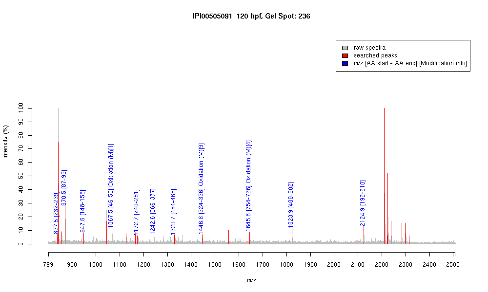

| Name | Cell division cycle gene CDC48 |
|---|---|
| MW | 89351.7 |
| PI | 5.13 |
| Mascot Protein Score | 73 |
| Masses (matched / unmatched) | 11 / 21 |

| Peptide | MZ (calc) | MZ (observed) | Error (DA) | Error (PPM) | Start | Stop | Modifications |
|---|---|---|---|---|---|---|---|
| AIGVKPPR | 837.5305 | 837.5262 | -0.0043 | -5 | 232 | 239 | |
| VVRNNLR | 870.5267 | 870.5416 | 0.0149 | 17 | 87 | 93 | |
| KGDIFLVR | 947.5672 | 947.5678 | 0.0006 | 1 | 148 | 155 | |
| MDELQLFR | 1067.519 | 1067.5168 | -0.0022 | -2 | 46 | 53 | Oxidation (M)[1] |
| GILLYGPPGTGK | 1172.6674 | 1172.6504 | -0.017 | -14 | 240 | 251 | |
| EVDIGIPDATGR | 1242.6324 | 1242.624 | -0.0084 | -7 | 366 | 377 | |
| WALSQSNPSALR | 1329.691 | 1329.6801 | -0.0109 | -8 | 454 | 465 | |
| IVSQLLTLMDGLK | 1446.8236 | 1446.8134 | -0.0102 | -7 | 324 | 336 | Oxidation (M)[9] |
| KYEMFAQTLQQSR | 1645.8003 | 1645.7856 | -0.0147 | -9 | 754 | 766 | Oxidation (M)[4] |
| ELQELVQYPVEHPDK | 1823.9174 | 1823.9005 | -0.0169 | -9 | 488 | 502 | |
| EDEEESLNEVGYDDIGGVR | 2124.9204 | 2124.9016 | -0.0188 | -9 | 192 | 210 |